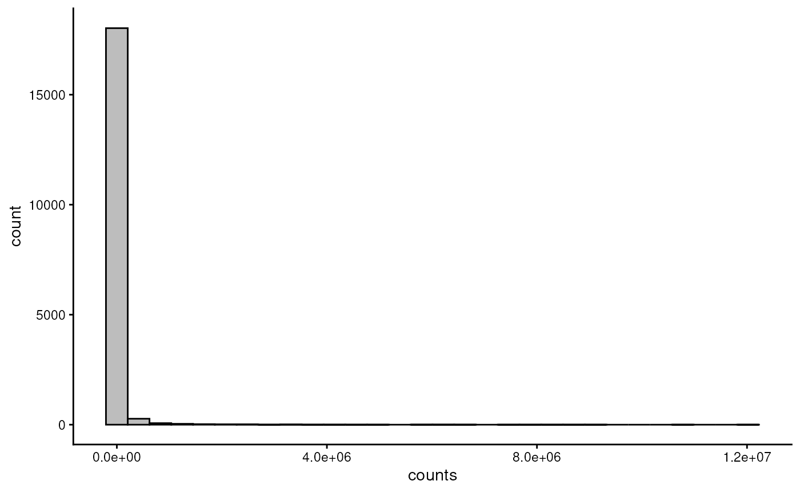
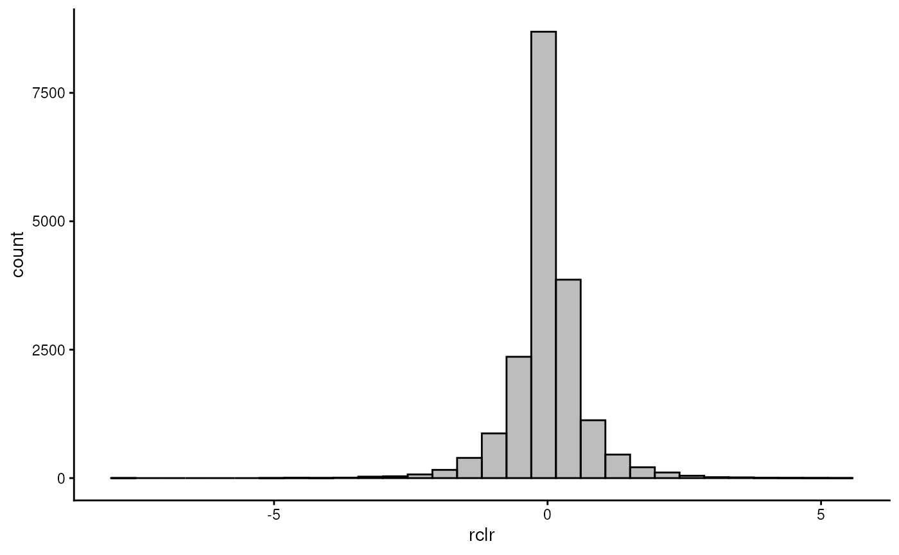
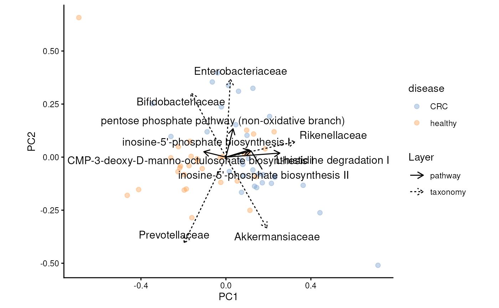

Orchestrating Microbiome Analysis with Bioconductor
September-October 2026
Source:vignettes/example-workflow.Rmd
example-workflow.RmdAuthors: Tuomas Borman1, Leo Lahti
Last modified: 17
September, 2026.


Overview
Description
This training session introduces Bioconductor tools for microbiome and multiomics data science through a practical case study. It focuses on a framework built around TreeSummarizedExperiment and MultiAssayExperiment data containers, designed for improved efficiency, scalability, and integrated analysis of multiple omics layers. Participants will gain hands-on experience with common analysis and visualization methods using the mia package family and other multiomics-compatible tools from the Bioconductor ecosystem. After the session, participants can continue learning through the freely available Orchestrating Microbiome Analysis (OMA) online book.
Pre-requisites
To get most of the training session, you should meet the following pre-requisites.
- You have a basic understanding of R. You have written simple R scripts or used Quarto/RMarkdown documents.
- You are familiar with Bioconductor.
- You have basic understanding on what the microbiome is.
If your time allows, we recommend to spend some time to explore beforehand Orchestrating Microbiome Analysis (OMA) online book.
Training session
Import data
In this workshop, we analyze data from the study by (Gupta et al. 2019). The dataset contains samples from patients with colorectal cancer (CRC) and healthy individuals. In the study, metagenomic data were collected from stool samples, with the aim of identifying microbial factors that may contribute to the development of the disease.
The first step is to import the data. For standardized data formats,
such as those generated by MetaPhlAn and HUMAnN, Bioconductor provides
dedicated importers. However, a TreeSummarizedExperiment
(TreeSE) object can also be constructed manually, which is
what we will do in this workshop.
First, we need to load the data files into the R session.
library(ape)
dir_name <- "data"
# Abundance table
path <- file.path(dir_name, "taxonomy_abundance.csv")
assay <- read.csv(path, row.names = 1L)
# Taxonomy table
path <- file.path(dir_name, "taxonomy_table.csv")
taxonomy_table <- read.csv(path, row.names = 1L)
# Sample metadata
path <- file.path(dir_name, "sample_metadata.csv")
sample_metadata <- read.csv(path, row.names = 1L)
# Phylogeny
path <- file.path(dir_name, "phylogeny.tree")
phylogeny <- read.tree(path)Then we create TreeSE object. Note:
data types must be in specific format.
library(mia)
# Abundance table
assay <- assay |> as.matrix()
assay_list <- SimpleList(counts = assay)
# Taxonomy table and sample metadata
taxonomy_table <- taxonomy_table |> DataFrame()
sample_metadata <- sample_metadata |> DataFrame()
# Construct TreeSE
tse <- TreeSummarizedExperiment(
assays = assay_list,
rowData = taxonomy_table,
colData = sample_metadata,
rowTree = phylogeny
)
tse
#> class: TreeSummarizedExperiment
#> dim: 308 60
#> metadata(0):
#> assays(1): counts
#> rownames(308): species-Escherichia_coli species-Alistipes_putredinis
#> ... species-Campylobacter_ureolyticus
#> species-Prevotella_sp._oral_taxon_376
#> rowData names(7): superkingdom phylum ... genus species
#> colnames(60): GupDM_A_11 GupDM_A_15 ... GupDM_JO GupDM_JP
#> colData names(27): study_name subject_id ... disease_stage
#> disease_location
#> reducedDimNames(0):
#> mainExpName: NULL
#> altExpNames(0):
#> rowLinks: a LinkDataFrame (308 rows)
#> rowTree: 1 phylo tree(s) (10430 leaves)
#> colLinks: NULL
#> colTree: NULLA TreeSE consists of slots that store different types of
data. For example, the colData slot stores sample-level
metadata, such as disease status, age, or sex.
Data can be accessed using functions named after the corresponding
slots. For example, colData() retrieves the sample metadata
from the TreeSE object.
colData(tse)
#> DataFrame with 60 rows and 27 columns
#> study_name subject_id body_site antibiotics_current_use
#> <character> <character> <character> <character>
#> GupDM_A_11 GuptaA_2019 GupDM_A11 stool no
#> GupDM_A_15 GuptaA_2019 GupDM_A15 stool no
#> GupDM_A1 GuptaA_2019 GupDM_A1 stool no
#> GupDM_A10 GuptaA_2019 GupDM_A10 stool no
#> GupDM_A12 GuptaA_2019 GupDM_A12 stool no
#> ... ... ... ... ...
#> GupDM_JL GuptaA_2019 GupDM_JL stool no
#> GupDM_JM GuptaA_2019 GupDM_JM stool no
#> GupDM_JN GuptaA_2019 GupDM_JN stool no
#> GupDM_JO GuptaA_2019 GupDM_JO stool no
#> GupDM_JP GuptaA_2019 GupDM_JP stool no
#> study_condition disease age age_category gender
#> <character> <character> <integer> <character> <character>
#> GupDM_A_11 CRC CRC 41 adult female
#> GupDM_A_15 CRC CRC 59 adult male
#> GupDM_A1 CRC CRC 62 adult male
#> GupDM_A10 CRC CRC 65 adult female
#> GupDM_A12 CRC CRC 65 adult male
#> ... ... ... ... ... ...
#> GupDM_JL CRC CRC 59 adult female
#> GupDM_JM CRC CRC 60 adult male
#> GupDM_JN CRC CRC 58 adult male
#> GupDM_JO CRC CRC 71 senior male
#> GupDM_JP CRC CRC 67 senior male
#> country location non_westernized sequencing_platform
#> <character> <character> <character> <character>
#> GupDM_A_11 IND Kerala no IlluminaNextSeq
#> GupDM_A_15 IND Kerala no IlluminaNextSeq
#> GupDM_A1 IND Kerala no IlluminaNextSeq
#> GupDM_A10 IND Kerala no IlluminaNextSeq
#> GupDM_A12 IND Kerala no IlluminaNextSeq
#> ... ... ... ... ...
#> GupDM_JL IND Bhopal no IlluminaNextSeq
#> GupDM_JM IND Bhopal no IlluminaNextSeq
#> GupDM_JN IND Bhopal no IlluminaNextSeq
#> GupDM_JO IND Bhopal no IlluminaNextSeq
#> GupDM_JP IND Bhopal no IlluminaNextSeq
#> DNA_extraction_kit PMID number_reads number_bases
#> <character> <integer> <integer> <numeric>
#> GupDM_A_11 Qiagen 31719139 6227234 883347281
#> GupDM_A_15 Qiagen 31719139 9884266 1384530792
#> GupDM_A1 Qiagen 31719139 27687226 3808647004
#> GupDM_A10 Qiagen 31719139 8468208 1174245166
#> GupDM_A12 Qiagen 31719139 6988838 984235167
#> ... ... ... ... ...
#> GupDM_JL Qiagen 31719139 9878044 1387793557
#> GupDM_JM Qiagen 31719139 10328094 1435043694
#> GupDM_JN Qiagen 31719139 9789278 1347588954
#> GupDM_JO Qiagen 31719139 11274338 1501226163
#> GupDM_JP Qiagen 31719139 10400668 1428270555
#> minimum_read_length median_read_length NCBI_accession
#> <integer> <integer> <character>
#> GupDM_A_11 60 151 SRR8865600
#> GupDM_A_15 60 150 SRR8865596
#> GupDM_A1 60 150 SRR8865598
#> GupDM_A10 60 150 SRR8865599
#> GupDM_A12 60 150 SRR8865601
#> ... ... ... ...
#> GupDM_JL 60 151 SRR8865572
#> GupDM_JM 60 150 SRR8865575
#> GupDM_JN 60 150 SRR8865574
#> GupDM_JO 60 150 SRR8865581
#> GupDM_JP 60 150 SRR8865580
#> curator BMI disease_subtype tnm
#> <character> <numeric> <character> <character>
#> GupDM_A_11 Arianna_Bonetti;Paol.. 19.22 adenocarcinoma t2m0n0
#> GupDM_A_15 Arianna_Bonetti;Paol.. 21.40 adenocarcinoma t2n0m0
#> GupDM_A1 Arianna_Bonetti;Paol.. 20.08 adenocarcinoma t2n0m0
#> GupDM_A10 Arianna_Bonetti;Paol.. 21.01 adenocarcinoma t3n2m0
#> GupDM_A12 Arianna_Bonetti;Paol.. 20.32 adenocarcinoma t2n2m0
#> ... ... ... ... ...
#> GupDM_JL Arianna_Bonetti;Paol.. 20.34 adenocarcinoma t4n1m0
#> GupDM_JM Arianna_Bonetti;Paol.. 18.33 adenocarcinoma t2n0m0
#> GupDM_JN Arianna_Bonetti;Paol.. 19.92 adenocarcinoma t2n0m0
#> GupDM_JO Arianna_Bonetti;Paol.. 20.03 adenocarcinoma t4n1m0
#> GupDM_JP Arianna_Bonetti;Paol.. 17.69 adenocarcinoma t3n2m0
#> fobt disease_stage disease_location
#> <character> <character> <character>
#> GupDM_A_11 yes I rectum
#> GupDM_A_15 yes I rectum
#> GupDM_A1 yes I rectum
#> GupDM_A10 yes III colon
#> GupDM_A12 yes III rectum
#> ... ... ... ...
#> GupDM_JL yes III rectum
#> GupDM_JM yes I rectum
#> GupDM_JN yes I rectum
#> GupDM_JO yes III sigmoid_colon
#> GupDM_JP yes III rectumA TreeSE object contains rows and columns and can be
subsetted similarly to other rectangular objects in R. Below, we select
the first row (i.e., one bacterial feature) and samples 10–13.
tse[1, 10:13]
#> class: TreeSummarizedExperiment
#> dim: 1 4
#> metadata(0):
#> assays(1): counts
#> rownames(1): species-Escherichia_coli
#> rowData names(7): superkingdom phylum ... genus species
#> colnames(4): GupDM_A4 GupDM_A5 GupDM_A6 GupDM_A7
#> colData names(27): study_name subject_id ... disease_stage
#> disease_location
#> reducedDimNames(0):
#> mainExpName: NULL
#> altExpNames(0):
#> rowLinks: a LinkDataFrame (1 rows)
#> rowTree: 1 phylo tree(s) (10430 leaves)
#> colLinks: NULL
#> colTree: NULLAgglomeration
Agglomeration is commonly used to reduce the number of features or to focus on biologically meaningful subgroups of the data. Agglomeration means merging data into higher taxonomic levels by summing the abundances of related taxa.
Below, we agglomerate the data into all available taxonomy levels.
library(mia)
tse <- agglomerateByRanks(tse)At first glance, it might seem that nothing has changed. However, the
agglomerated data is stored in the altExp slot. This slot
keeps track of the sample mapping and stores different versions of the
data.
We can access data agglomeration into the phylum level with the following command:
altExp(tse, "phylum")
#> class: TreeSummarizedExperiment
#> dim: 11 60
#> metadata(1): agglomerated_by_rank
#> assays(1): counts
#> rownames(11): Actinobacteria Bacteroidota ... Synergistetes
#> Verrucomicrobia
#> rowData names(7): superkingdom phylum ... genus species
#> colnames(60): GupDM_A_11 GupDM_A_15 ... GupDM_JO GupDM_JP
#> colData names(27): study_name subject_id ... disease_stage
#> disease_location
#> reducedDimNames(0):
#> mainExpName: NULL
#> altExpNames(0):
#> rowLinks: a LinkDataFrame (11 rows)
#> rowTree: 1 phylo tree(s) (11 leaves)
#> colLinks: NULL
#> colTree: NULLThe data looks similar to original data; only the number of rows has
changed. While we could store the phylum-level data in a separate
variable, it’s better to keep it in the altExp slot, as it
maintains consistent sample mapping for us.
Transformation
Another data processing step where microbiome analysis has unique approaches is transformation. Microbiome data is typically zero-inflated:
library(miaViz)
plotHistogram(tse, assay.type = "counts")
Below, we apply centered log-ratio (CLR) transformations which respect the compositional nature of microbiome data.
tse <- transformAssay(
tse,
assay.type = "counts",
method = "rclr",
altexp = altExpNames(tse)
)By visualixing the CLR-transofrmed data, we see that the data is now centered to zero without constrains; suitable for classical statistical tests.
plotHistogram(tse, assay.type = "rclr")
Another common transformation is relative transformation.
tse <- transformAssay(
tse,
assay.type = "counts",
method = "relabundance",
altexp = altExpNames(tse)
)We can see that the transformed table is added to the same data
object. We can access the table with assay() command.
assay(tse, "relabundance")[1:2, 1:3]
#> GupDM_A_11 GupDM_A_15 GupDM_A1
#> species-Escherichia_coli 0.2621285 0.5733251 0.246128460
#> species-Alistipes_putredinis 0.1549458 0.0000000 0.008134657Community composition
While mia package include common methods for analysis, miaViz provides methods for visualizing microbiome data. For instance, we can visualize abundance of phyla with a bar plot. To compare study groups, we can visualize them separately.
# Create a bar plot
plotAbundance(
tse,
assay.type = "counts",
as.relative = TRUE,
rank = "phylum",
col.var = "disease"
)
Alpha diversity
To summarize the diversity of microbial communities, alpha diversity is commonly calculated. There are several diversity indices available, all of which measure the number of distinct taxa and how evenly their abundances are distributed, each with a different emphasis.
tse <- addAlpha(tse, assay.type = "counts")The results are stored in colData. By default,
addAlpha() returns a set of indices that considers
different aspects of diversity. Commonly, the results are visualized
with a box plot.
Below, we visualize Faith’s phylogenetic diversity, an alpha-diversity measure that incorporates information from the phylogenetic tree.
The advantage of using a phylogenetic diversity measure is that it accounts for the evolutionary relationships between microbial features. Not all bacteria are equally related: some taxa are more closely related than others. Incorporating this information allows us to distinguish between communities that may have the same number of taxa but differ in their phylogenetic breadth, preserving information that would be lost with non-phylogenetic diversity measures.
plotBoxplot(tse, col.var = "faith_diversity", x = "disease")
To test the statistical significance of results, we can do Wilcoxon test.
library(daa)
getWilcoxonTest(tse, formula = faith_diversity ~ disease)
#> # A tibble: 1 × 8
#> rownames .y. group1 group2 n1 n2 statistic p
#> * <chr> <chr> <chr> <chr> <int> <int> <dbl> <dbl>
#> 1 faith_diversity faith_diversity CRC healthy 30 30 679 0.000543Beta diversity
While alpha diversity reflects within-sample diversity, beta diversity measures diversity between samples. This allows us to assess whether there are patterns in microbial profiles associated with covariates.
Below, we apply Principal Coordinate Analysis (PCoA), also known as multidimensional scaling (MDS). PCoA is similar to Principal Component Analysis (PCA), but instead of operating directly on the original feature matrix, it starts with a dissimilarity or distance matrix.
Several distance measures can be used with PCoA. One of them is UniFrac, which incorporates the phylogenetic relationships between microbial taxa when calculating differences between microbial communities. This allows PCoA based on UniFrac distances to capture differences in both community composition and evolutionary relatedness.
tse <- addMDS(
tse,
assay.type = "counts",
method = "unifrac"
)The data is stoed to reducedDim slot of
TreeSE. Common way to visualize the results is to create a
scatter plot.
plotOrdination(tse, dimred = "MDS", colour.by = "disease")
Differential abundance/prevalence analysis
In differential abundance analysis (DAA), we examine each bacterial feature individually and test whether its abundance differs between study groups. For example, we can ask whether Bacterium X is more abundant in CRC patients than in healthy individuals.
Recent studies suggest that differential prevalence analysis (DPA) can provide a more robust alternative in some settings. Instead of comparing abundance, DPA asks whether a microbial feature is detected more frequently in one group than another.
MaAsLin3 (Nickols et al. 2024) supports both differential abundance and differential prevalence analyses.
library(maaslin3)
# Helper for catching all printing from Maaslin3 and IL
quiet <- function(x) {
invisible(capture.output(x))
return(x)
}
res <- maaslin3(tse, formula = ~ disease, output = "maaslin3_output") |> quiet()Maalsin3 generates summary figure.
file_path <- file.path("maaslin3_output", "figures", "summary_plot.png")
knitr::include_graphics(file_path)
Import additional omic layer
The dataset contains functional pathway information in addition to
taxonomic profiles. We import the pathway data in the same way as the
taxonomy data and store it in a TreeSE data container. Then
we wrap these two omics into MAE data container.
Let’s first import pathways into TreeSE.
dir_name <- "data"
# Abundance table
path <- file.path(dir_name, "pathway_abundance.csv")
assay <- read.csv(path, row.names = 1L)
# Abundance table
assay <- assay |> as.matrix()
assay_list <- SimpleList(relative_abundance = assay)
# Sample metadata
sample_metadata <- sample_metadata |> DataFrame()
# Construct TreeSE
tse2 <- TreeSummarizedExperiment(
assays = assay_list,
colData = sample_metadata
)Now when we have also pathways in TreeSE format, we can
wrap them with MAE. It can be seen as a list of
TreeSE objects with additional sampleMap
functionality that links samples between omic layers.
mae <- MultiAssayExperiment(
experiments = ExperimentList(
taxonomy = tse,
pathway = tse2
),
colData = sample_metadata
)
mae
#> A MultiAssayExperiment object of 2 listed
#> experiments with user-defined names and respective classes.
#> Containing an ExperimentList class object of length 2:
#> [1] taxonomy: TreeSummarizedExperiment with 308 rows and 60 columns
#> [2] pathway: TreeSummarizedExperiment with 50 rows and 60 columns
#> Functionality:
#> experiments() - obtain the ExperimentList instance
#> colData() - the primary/phenotype DataFrame
#> sampleMap() - the sample coordination DataFrame
#> `$`, `[`, `[[` - extract colData columns, subset, or experiment
#> *Format() - convert into a long or wide DataFrame
#> assays() - convert ExperimentList to a SimpleList of matrices
#> exportClass() - save data to flat filesIn this dataset, the same samples are measured across both omics
layers. However, the sampleMap structure allows flexible
mapping between samples across experiments, so the omics layers do not
need to contain exactly the same set of samples. This is useful when
some samples are missing from one omics layer or when samples have
different identifiers across datasets.
Next we apply CLR-transformation to pathways. Note that the experiment or layer can be accessed similarly to list.
mae[[2]] <- transformAssay(
mae[[2]],
assay.type = "relative_abundance",
method = "rclr",
pseudocount = TRUE
)Data integration
In recent years, many different approaches to integrate multiomics data has been proposed. For instance, (Mangnier et al. 2025) benchmarked different approaches to integrate metagenomics and metabolomics data, and evaluated different methods based on robustness and interpretability.
In the publication, they proposed the following methods to address the following research questions:
| Scientific question | Research aim | Recommended method |
|---|---|---|
| Is there any relationship between microorganisms and metabolites at a global level? | Global associations | Mantel test |
| Are microbiome and metabolome datasets summarizable through a limited number of components? | Data summarization | RDA |
| Can we identify associations between metabolites and species? | Individual associations | MiRKAT |
| Can we identify core microorganisms and metabolites? | Feature selection (univariate) | CODA-LASSO (compositional covariates) |
These methods are implemented in multiomics package that
supports MAE data container.
Mantel test
Usually it is wise to go from simpler methods to more complex.
The Mantel test calculates a dissimilarity matrix for each omics layer separately. It then compares the two matrices to determine whether the patterns of differences between samples are similar across the two layers.
If samples that are taxonomically similar in layer 1 are also similar in layer 2, and samples that are dissimilar in layer 1 are also dissimilar in layer 2, this indicates a global association between the two omics layers.
library(multiomics)
mantel <- getMantel(
mae,
experiments = c(1, 2),
assay.types = c("rclr", "rclr"),
dist.methods = c("euclidean", "euclidean")
)
mantel
#>
#> Mantel statistic based on Kendall's rank correlation tau
#>
#> Call:
#> mantel(xdis = x[[1L]], ydis = x[[2L]], method = method, permutations = npermutations, strata = strata, na.rm = na.rm, parallel = parallel)
#>
#> Mantel statistic r: 0.154
#> Significance: 0.001
#>
#> Upper quantiles of permutations (null model):
#> 90% 95% 97.5% 99%
#> 0.0520 0.0701 0.0845 0.0974
#> Permutation: free
#> Number of permutations: 999Kendall’s tau correlation shows samples that are relatively similar in their taxonomic composition tend to be relatively similar in their pathway composition, but the relationship is weak.
MiRKAT
MiRKAT (Microbiome Regression-based Kernel Association Test) can be used to investigate whether specific microbial pathways are significantly associated with overall microbial community composition. Unlike the Mantel test, which evaluates the global association between two entire dissimilarity matrices, MiRKAT can help identify individual pathways whose variation across samples is associated with differences in the microbial profile.
mirkat <- getMiRKAT(
mae,
experiments = c(1, 2),
assay.types = c("rclr", "rclr"),
altexp = c("family", NA),
dist.methods = "euclidean"
)
plot(mirkat)
Pairwise association
Now that we know that the microbial profiles are associated with certain pathways, we can examine these relationships in more detail. One simple approach is to calculate pairwise associations between all taxon–pathway pairs and visualize the results as a heatmap. This allows us to identify specific taxa and pathways that show strong positive or negative associations.
cor <- getPairwiseAssociation(
mae,
experiments = c(1, 2),
assay.types = c("rclr", "rclr"),
altexp = c("phylum", NA)
)
plot(cor)
Joint robust principal component analysis
Although correlation-based approaches are simple and easy to interpret, they generally focus on pairwise relationships and may not adequately capture the complex, multivariate structure of microbial communities. Microbes interact as networks, so it can be useful to identify patterns of variation shared across multiple features and omics layers.
To account for this, we can use joint robust principal component analysis (joint RPCA) (Cordazzo Vargas et al. 2026). The method identifies a shared lower-dimensional representation of the samples across the omics layers, while allowing features from different layers to have different weights to account for differences in scale and variability. This reduces the influence of noise and features with very large values.
PCA is then applied to this integrated representation to identify the major axes of variation. The resulting principal components (latent factors) can be associated with clinical or other outcomes to determine whether the shared multi-omics variation is related to the outcome.
Finally, by examining the feature loadings of the components, we can identify which microbial taxa, pathways, or other features contribute most strongly to the shared patterns of variation across the omics layers.
# Run joint-RPCA
mae <- addJointRPCA(
mae,
experiments = c(1, 2),
altexp = c("family", NA),
assay.types = c("rclr", "rclr")
)The result can be visualize with a scatter plot similarly to regular PCA.
library(miaViz)
plotJointRPCA(mae, "JointRPCA", ntop = 5, colour.by = "disease")
IntegratedLearner
Machine-learning applications often use a single data table, but different omics layers can contain complementary information that may improve prediction. There are three common strategies for integrating multiple layers:
Early fusion: Concatenate the different data tables into a single table and train one machine-learning model on the combined features.
Late fusion: Train a separate model for each omics layer and combine their predictions, for example by averaging or weighting them.
Intermediate fusion: Train separate models for each omics layer and then use a meta-model to combine the information or predictions from these models. This approach can often capture complementary information more flexibly than simple early or late fusion.
IntegratedLearner (Mallick et al. 2023) is an R package designed to facilitate multi-omics machine-learning and prediction. It can be used not only to build predictive models from multiple omics layers but also to identify features or biomarkers that contribute to prediction, helping determine which taxa, pathways, or other molecular features are most informative for the outcome.
library(IntegratedLearner)
model <- IntegratedLearner(
MAE_train = mae,
experiment = c(1, 2),
assay.type = c("counts", "relative_abundance"),
outcome_col = "disease",
base_learner = "SL.randomForest",
subject_id_col = "subject_id",
family = binomial()
)
#> Time for model fit : 0.074 minutes
#> ========================================
#> Model fit for individual layers: SL.randomForest
#> Model fit for stacked layer: sl_nnls_auc
#> Model fit for concatenated layer: SL.randomForest
#> ========================================
#> AUC metric for training data:
#> Individual layers:
#> pathway taxonomy
#> 0.921 0.949
#> ======================
#> Stacked model:0.948
#> ======================
#> Concatenated model:0.934
#> ======================
#> ========================================
#> Weights for individual layers predictions in IntegratedLearner:
#> pathway taxonomy
#> 0.165 0.835
#> ========================================Other integration approaches
Methods for integrating multi-omics data are rapidly evolving, and several other approaches are available depending on the research question.
Anansi uses guided pairwise association testing, where only feature pairs supported by prior biological knowledge or the literature are tested. This can improve interpretability by focusing on biologically plausible associations (Bastiaanssen et al. 2023).
Multi-Omics Factor Analysis (MOFA) identifies latent factors that capture shared and layer-specific sources of variation across multiple omics datasets. This can help reveal biological patterns that are common across data layers (Argelaguet et al. 2020).
DIABLO, implemented in mixOmics, uses partial least squares discriminant analysis (PLS-DA) to integrate multiple omics layers and identify features that are jointly informative for distinguishing predefined groups, making it particularly useful for biomarker discovery (Rohart et al. 2017).
The first two approaches, Anansi and MOFA, already support
MAE. Support for mixOmics/DIABLO is planned for a future
release.
Thank you for your time!
Join us!
OMA book: bioconductor.org/books/release/OMA/
Discussion forums: Bioconductor Zulip
Microbiome working group


Session information
sessionInfo()
#> R version 4.6.1 (2026-06-24)
#> Platform: x86_64-pc-linux-gnu
#> Running under: Ubuntu 24.04.4 LTS
#>
#> Matrix products: default
#> BLAS: /usr/lib/x86_64-linux-gnu/openblas-pthread/libblas.so.3
#> LAPACK: /usr/lib/x86_64-linux-gnu/openblas-pthread/libopenblasp-r0.3.26.so; LAPACK version 3.12.0
#>
#> locale:
#> [1] LC_CTYPE=en_US.UTF-8 LC_NUMERIC=C
#> [3] LC_TIME=en_US.UTF-8 LC_COLLATE=en_US.UTF-8
#> [5] LC_MONETARY=en_US.UTF-8 LC_MESSAGES=en_US.UTF-8
#> [7] LC_PAPER=en_US.UTF-8 LC_NAME=C
#> [9] LC_ADDRESS=C LC_TELEPHONE=C
#> [11] LC_MEASUREMENT=en_US.UTF-8 LC_IDENTIFICATION=C
#>
#> time zone: Etc/UTC
#> tzcode source: system (glibc)
#>
#> attached base packages:
#> [1] stats4 stats graphics grDevices utils datasets methods
#> [8] base
#>
#> other attached packages:
#> [1] nnls_1.6 IntegratedLearner_0.99.3
#> [3] multiomics_0.99.0 knitr_1.52
#> [5] maaslin3_1.5.7 daa_0.99.0
#> [7] miaViz_1.21.5 ggraph_2.2.2
#> [9] ggplot2_4.0.3 mia_1.21.8
#> [11] TreeSummarizedExperiment_2.21.0 Biostrings_2.81.9
#> [13] XVector_0.53.0 SingleCellExperiment_1.35.2
#> [15] MultiAssayExperiment_1.39.1 SummarizedExperiment_1.43.0
#> [17] Biobase_2.73.2 GenomicRanges_1.65.4
#> [19] Seqinfo_1.3.2 IRanges_2.47.5
#> [21] S4Vectors_0.51.10 BiocGenerics_0.59.12
#> [23] generics_0.1.4 MatrixGenerics_1.25.0
#> [25] matrixStats_1.5.0 ape_5.8-1
#>
#> loaded via a namespace (and not attached):
#> [1] nnet_7.3-21 TH.data_1.1-5
#> [3] vctrs_0.7.3 digest_0.6.39
#> [5] png_0.1-9 shape_1.4.6.1
#> [7] BiocBaseUtils_1.15.1 ggrepel_0.9.8
#> [9] parallelly_1.48.0 permute_0.9-10
#> [11] MASS_7.3-66 fontLiberation_0.1.0
#> [13] pkgdown_2.2.1 reshape2_1.4.5
#> [15] foreach_1.5.2 withr_3.0.3
#> [17] xfun_0.61 ggfun_0.2.1
#> [19] survival_3.8-12 memoise_2.0.1
#> [21] ggbeeswarm_0.7.3 MatrixModels_0.5-4
#> [23] mixtools_2.0.0.1 systemfonts_1.3.2
#> [25] ragg_1.5.2 tidytree_0.4.8
#> [27] zoo_1.9-0 Formula_1.2-6
#> [29] otel_0.2.0 httr_1.4.9
#> [31] rstatix_1.1.0 globals_0.19.1
#> [33] nanonext_1.10.2 SuperLearner_2.0-42
#> [35] rstudioapi_0.19.0 pan_2.0
#> [37] base64enc_0.1-6 ScaledMatrix_1.21.0
#> [39] randomForest_4.7-1.2 polyclip_1.10-7
#> [41] statip_0.2.3 SparseArray_1.13.2
#> [43] stringr_1.6.0 desc_1.4.3
#> [45] rms_8.1-1 evaluate_1.0.5
#> [47] S4Arrays_1.13.0 MiRKAT_1.2.3
#> [49] glmnet_5.0 irlba_2.3.7
#> [51] colorspace_2.1-3 ROCR_1.0-12
#> [53] magrittr_2.0.5 viridis_0.6.5
#> [55] ggtree_4.3.0 lattice_0.23-1
#> [57] future.apply_1.20.2 SparseM_1.84-2
#> [59] DECIPHER_3.9.3 gam_1.22-7
#> [61] scuttle_1.23.2 class_7.3-24
#> [63] Hmisc_5.3-0 pillar_1.11.1
#> [65] nlme_3.1-171 iterators_1.0.14
#> [67] decontam_1.33.0 compiler_4.6.1
#> [69] beachmat_2.29.2 stringi_1.8.9
#> [71] gower_1.0.2 jomo_2.7-6
#> [73] lubridate_1.9.5 tokenizers_0.3.0
#> [75] stabledist_0.7-2 minqa_1.2.8
#> [77] plyr_1.8.9 crayon_1.5.3
#> [79] abind_1.4-8 scater_1.41.2
#> [81] timeSeries_4052.112 gridGraphics_0.5-1
#> [83] graphlayouts_1.2.5 sandwich_3.1-3
#> [85] dplyr_1.2.1 codetools_0.2-20
#> [87] multcomp_1.4-32 textshaping_1.0.5
#> [89] recipes_1.4.0 BiocSingular_1.29.1
#> [91] bslib_0.12.0 plotly_4.12.1
#> [93] tidytext_0.4.3 ggvegan_0.2.1
#> [95] splines_4.6.1 Rcpp_1.1.2
#> [97] quantreg_6.1 sparseMatrixStats_1.25.0
#> [99] utf8_1.2.6 clue_0.3-68
#> [101] lme4_2.0-6 fBasics_4052.98
#> [103] fs_2.1.0 listenv_1.0.0
#> [105] checkmate_2.3.4 DelayedMatrixStats_1.35.0
#> [107] Rdpack_2.6.6 PearsonDS_1.3.2
#> [109] ggplotify_0.1.3 tibble_3.3.1
#> [111] Matrix_1.7-6 statmod_1.5.2
#> [113] tweenr_2.0.3 pkgconfig_2.0.3
#> [115] tools_4.6.1 cachem_1.1.0
#> [117] rbibutils_2.4.1 viridisLite_0.4.3
#> [119] DBI_1.3.0 rmutil_1.1.10
#> [121] fastmap_1.2.0 rmarkdown_2.32
#> [123] scales_1.4.0 grid_4.6.1
#> [125] broom_1.0.13 sass_0.4.10
#> [127] stable_1.1.7 patchwork_1.3.2
#> [129] BiocManager_1.30.27 carData_3.0-6
#> [131] rpart_4.1.27 farver_2.1.2
#> [133] reformulas_0.4.4 tidygraph_1.3.1
#> [135] mgcv_1.9-4 yaml_2.3.12
#> [137] spatial_7.3-19 foreign_0.8-91
#> [139] cli_3.6.6 purrr_1.2.2
#> [141] lifecycle_1.0.5 caret_7.0-1
#> [143] mvtnorm_1.4-2 bluster_1.23.1
#> [145] lava_1.9.3 kernlab_0.9-33
#> [147] backports_1.5.1 mirai_2.7.2
#> [149] modeest_2.5.0 BiocParallel_1.47.0
#> [151] timechange_0.4.0 gtable_0.3.6
#> [153] pROC_1.19.1 parallel_4.6.1
#> [155] SnowballC_0.7.1 limma_3.99.0
#> [157] jsonlite_2.0.0 mitml_0.4-5
#> [159] yulab.utils_0.2.5 vegan_2.7-6
#> [161] BiocNeighbors_2.7.3 ranger_0.18.0
#> [163] janeaustenr_1.0.0 mice_3.19.0
#> [165] jquerylib_0.1.4 polspline_1.1.25
#> [167] segmented_2.2-2 timeDate_4052.112
#> [169] lazyeval_0.2.3 htmltools_0.5.9
#> [171] collapse_2.1.8 rappdirs_0.3.4
#> [173] glue_1.8.1 optparse_1.8.2
#> [175] gdtools_0.5.1 treeio_1.37.1
#> [177] gridExtra_2.3.1 boot_1.3-32
#> [179] igraph_2.3.3 R6_2.6.1
#> [181] tidyr_1.3.2 ggiraph_0.9.6
#> [183] CompQuadForm_1.4.4 labeling_0.4.3
#> [185] cluster_2.1.8.3 aplot_0.3.2
#> [187] ipred_0.9-16 nloptr_2.2.1
#> [189] DirichletMultinomial_1.55.0 DelayedArray_0.39.6
#> [191] tidyselect_1.2.1 vipor_0.4.7
#> [193] htmlTable_2.5.0 ggforce_0.5.0
#> [195] operator.tools_1.6.3.1 inline_0.3.21
#> [197] fontBitstreamVera_0.1.1 car_3.1-5
#> [199] future_1.75.0 ModelMetrics_1.2.2.2
#> [201] GUniFrac_1.9 rsvd_1.0.5
#> [203] S7_0.2.2 BiocStyle_2.41.0
#> [205] fontquiver_0.2.1 data.table_1.18.6.1
#> [207] htmlwidgets_1.6.4 RColorBrewer_1.1-3
#> [209] rlang_1.3.0 logistf_1.26.1
#> [211] formula.tools_1.7.1 ggnewscale_0.5.2
#> [213] hardhat_1.4.3 beeswarm_0.4.0
#> [215] prodlim_2026.03.11References
University of Turku, tvborm@utu.fi↩︎